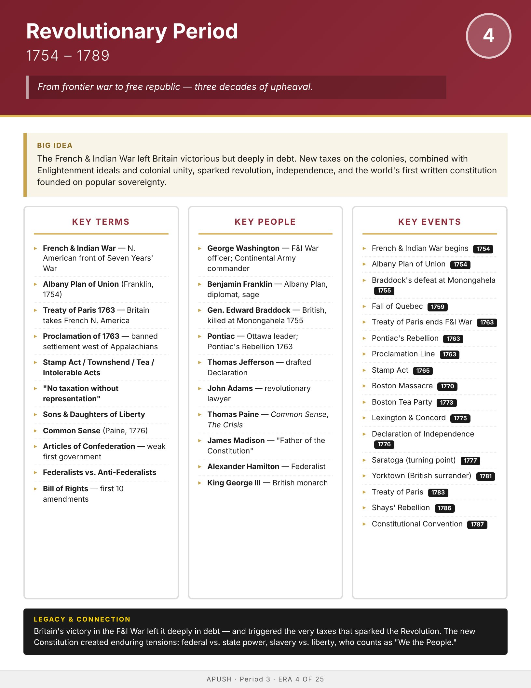

Era
Wise
AP History
AP United States History
Home
Course Sequence
Eras
Exam Prep
← Course Sequence
Era 4 of 25 · AP Period 3 · Lessons 5–8
Revolutionary Period
1754–1789
Open infographic full size
Print

← ERA 3
Colonial Era
ALL ERAS
Eras index
ERA 5 →
Early Republic